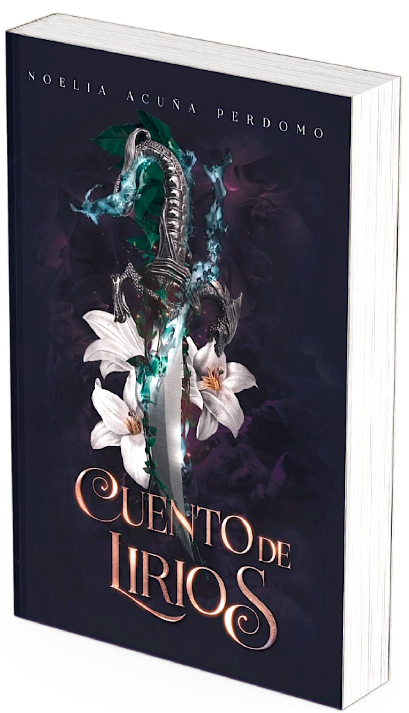
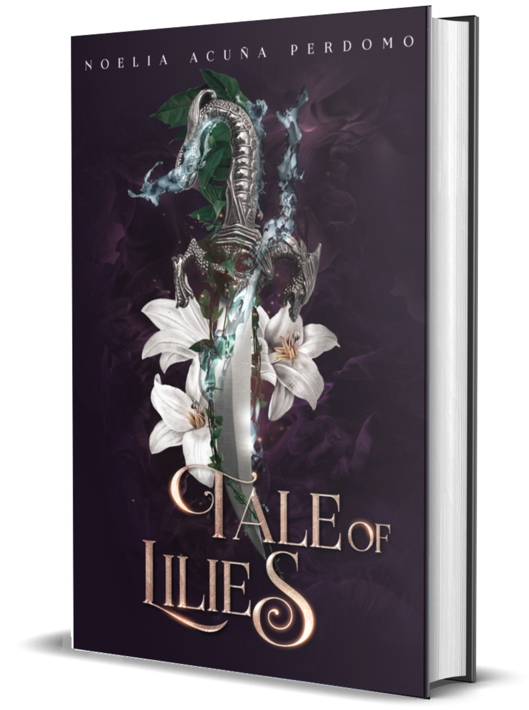
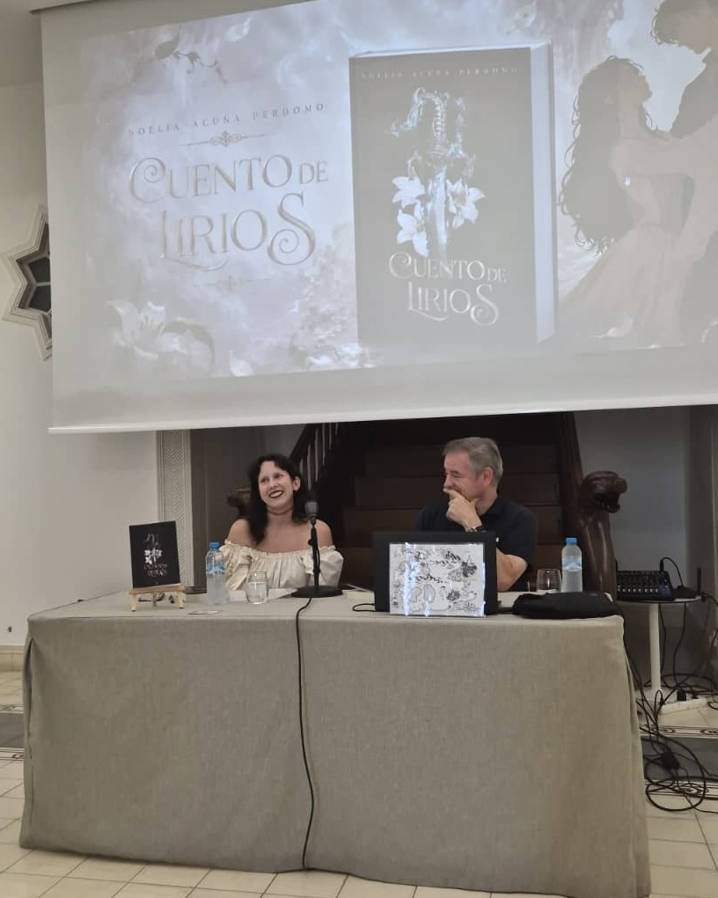
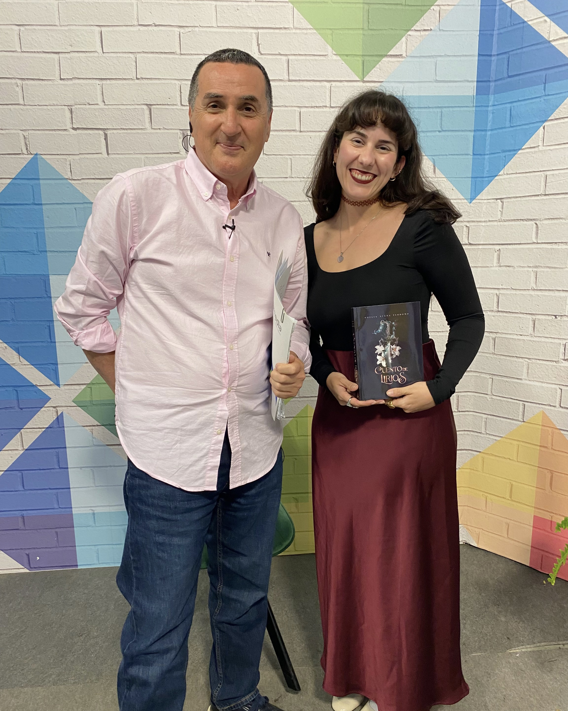
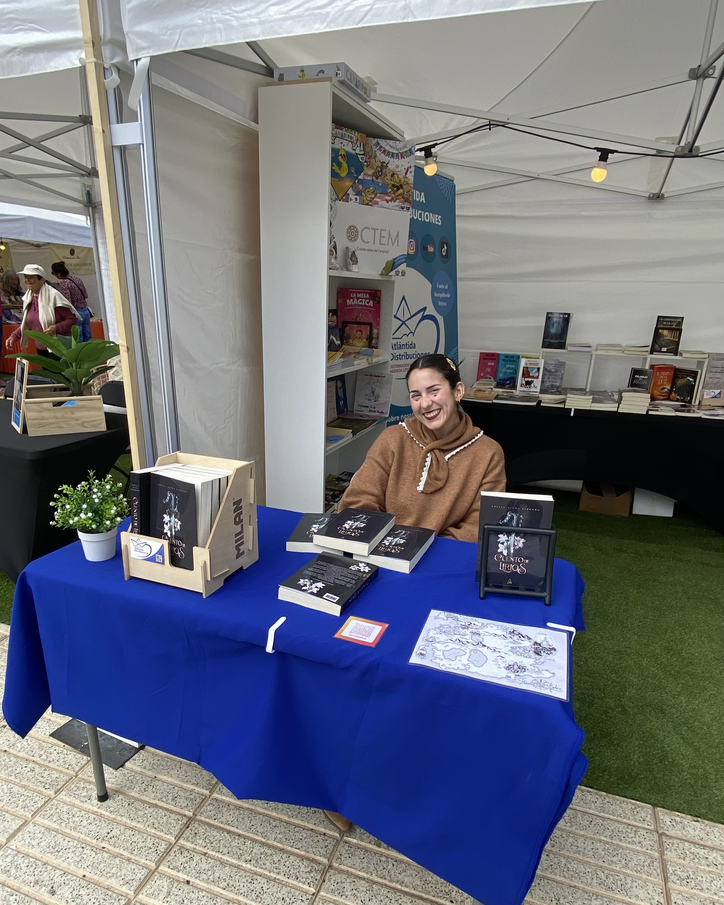
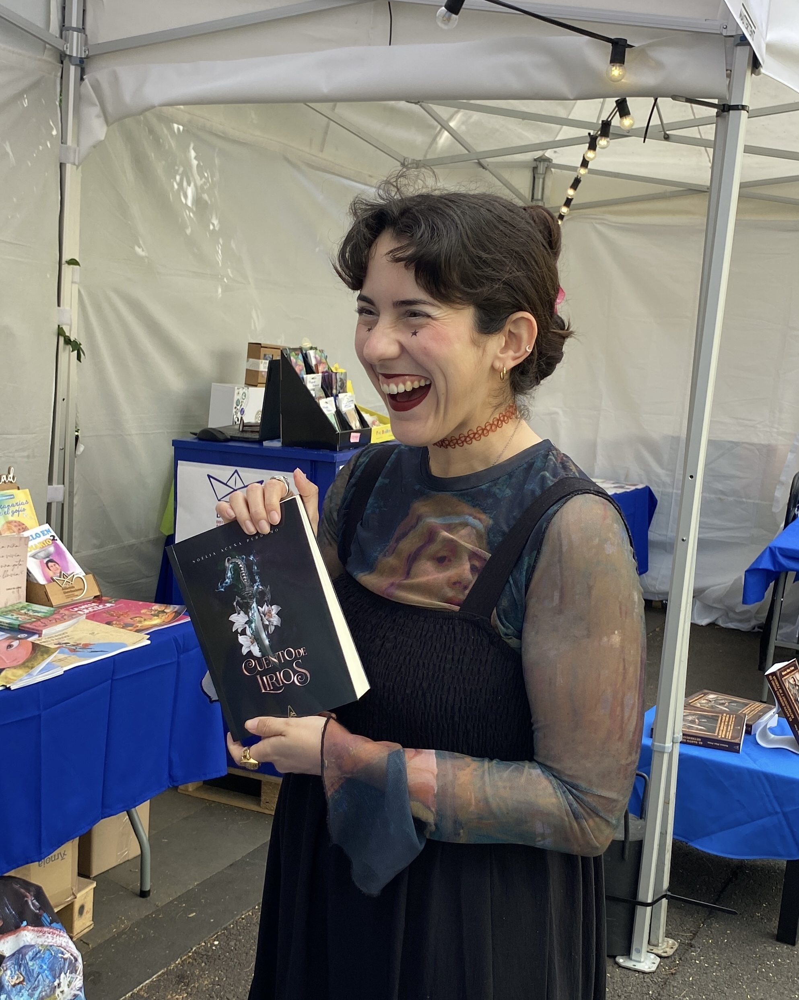
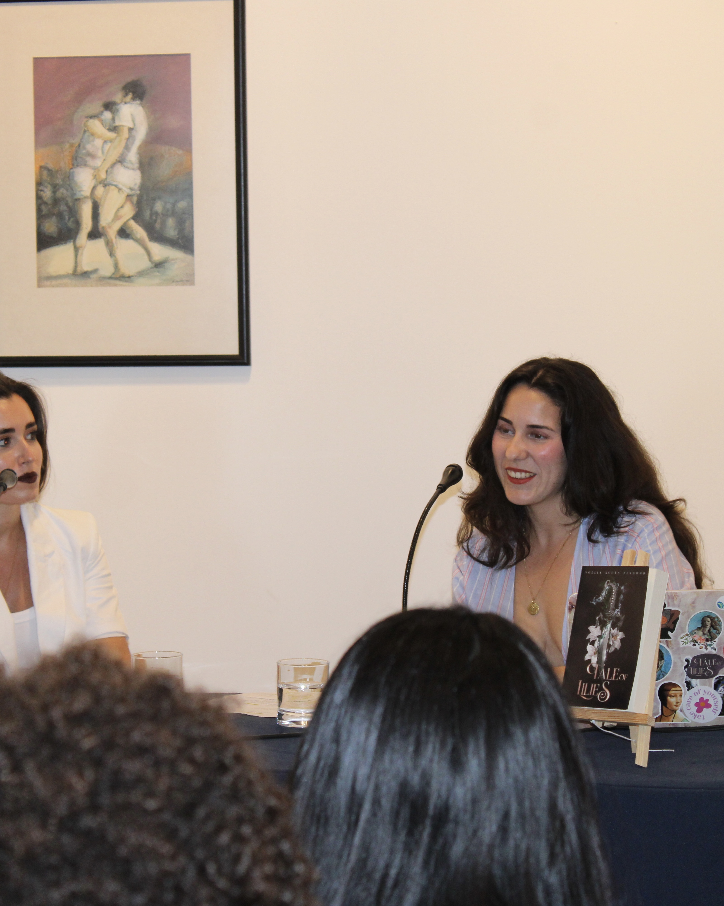
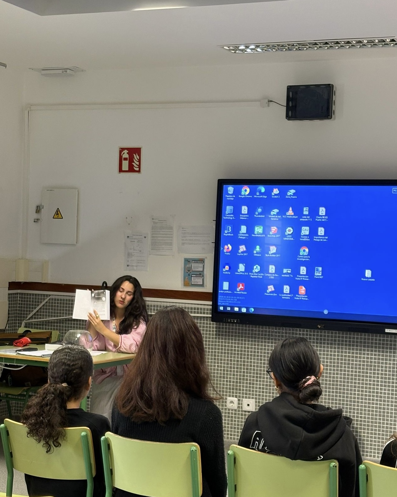

Edición en español
Cuento de Lirios
Delaira tiene veinte años y un pasado del que lleva demasiado tiempo intentando huir. Cuando participa en un sorteo que promete cambiar su vida, cree que por fin tendrá la oportunidad de dejar atrás su pequeño y tranquilo pueblo pesquero.
Pero lo que la espera al otro lado es mucho más peligroso de lo que imaginaba: rebeldes dispuestos a todo, una princesa caprichosa y un entramado de conspiraciones que la arrastrarán a un mundo donde nada es lo que parece.
En medio del caos aparece él, un chico de ojos color caramelo y un nombre tan escurridizo como el viento, que la guiará hacia una verdad imposible de ignorar… y hacia una magia que supera cualquier cuento de su infancia.
Porque cuando la verdad y la mentira comienzan a confundirse, Delaira tendrá que decidir en quién confiar. Mientras antiguos poderes despiertan, descubrirá que su destino podría cambiar no solo su vida… sino el futuro de todo un reino.
«El infierno es verde esmeralda.»

English edition
Tale of Lilies
When twenty-year-old Delaira enters a life-changing raffle, she seeks not only escape from her haunting past but also a glimpse beyond her quiet fishing village.
What she finds instead shatters expectations: dangerous rebels, a capricious princess, and political schemes drawing her into a journey she never imagined. At its core is a boy with caramel eyes and a name as elusive as the wind, leading her into a world where magic transcends her mother’s bedtime tales.
As truth and deception blur, Delaira must confront the myths and legends shaping her crumbling reality. Bound by love, loyalty, and awakening ancient powers, she embarks on a path that could reshape not just her destiny but the entire kingdom’s future.
“Once upon a time, when the sun was emerald and the moon its companion, the world thrived in enchanting harmony.”Buy
Paperback copies are available directly from the author for readers in the Canary Islands.
La autora
De Lanzarote a los mundos que imagina
Noelia Acuña Perdomo es conejera, nacida y criada en Lanzarote, una isla donde la brisa del Atlántico trae tantas historias como granos de arena. Su nombre, inspirado en una canción, parece haber marcado su destino: creció con alma de artista y una profunda pasión por los relatos, en todas sus formas y colores.
Graduada en Estudios Ingleses por la Universidad de La Laguna, compagina su amor por la literatura con su labor como profesora de inglés de secundaria, donde cada día intenta despertar en su alumnado el entusiasmo por las palabras y los mundos que habitan en ellas.
Apasionada de la fantasía y el romance, sus historias combinan la influencia de la tradición anglosajona con la riqueza cultural de las Islas Canarias. En ellas explora emociones intensas y temas sociales a través de mundos donde la magia y los vínculos humanos ocupan un lugar central.
Debutó en 2025 con Tale of Lilies, su primera novela en inglés. En 2026, la historia llega al público en castellano de la mano de Algani Editorial bajo el título Cuento de Lirios.
Cuando no está escribiendo…
Es fácil encontrarla enfrascada en un buen libro, tomando café en su cafetería de siempre o en su clase de ballet, donde el entusiasmo suele superar con creces a la técnica.
Eventos y apariciones

Junio 2026
Presentación oficial de Cuento de Lirios
Arrecife, Lanzarote

Mayo 2026
Entrevista con Biosfera TV
Playa Honda, Lanzarote

Mayo 2026
“Fiera” del Libro de Lanzarote
Arrecife, Lanzarote

Mayo 2026
Feria del Libro de Santa Cruz
Santa Cruz de Tenerife, Tenerife

Junio 2025
Presentación oficial de Tale of Lilies
Ermita de Tías · Tías, Lanzarote

Junio 2025
Presentación de Tale of Lilies en el IES Puerto del Carmen
Puerto del Carmen, Lanzarote
Contacto
Hablemos
Gracias por visitar mi pequeño rincón.
Si deseas ponerte en contacto conmigo, estaré encantada de leerte.
noelia.aper@gmail.com